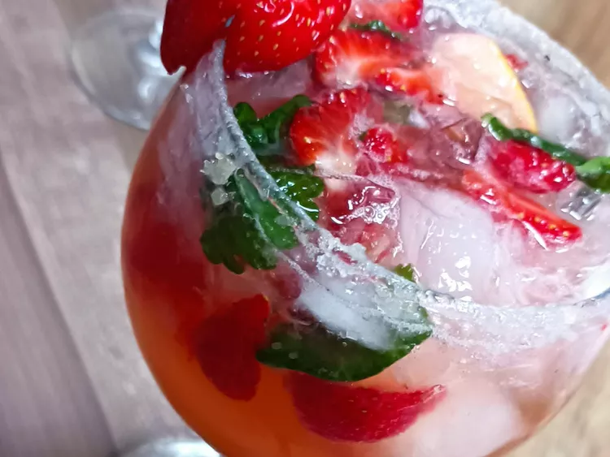

Strawberry Mojito
This strawberry mojito recipe makes the perfect drink for a hot summer day! I had this drink at a popular
chain
restaurant
and decided to try it at home. I have served it at several different gatherings, and it has
always
been given
rave reviews.

Ingredients
- white sugar, for rimming
- 2 large limes, quartered
- ½ bunch mint leaves
- 7 strawberries, quartered
- 1 cup white sugar
- 2 cups club soda
- 1 cup white rum
- 8 cups ice cubes
Directions
-
Pour about 1/2 inch of sugar onto a small, shallow plate. Run a lime wedge around the rims of 8 cocktail
glasses,
then
dip the rims into sugar to coat; set aside.
-
Squeeze all of the lime wedges into a sturdy glass pitcher. Toss juiced limes into the pitcher along with
mint,
strawberries, and 1 cup sugar. Crush with a muddler to release strawberry juice and mint oil. Stir in club
soda and
rum
until sugar has dissolved.
-
Pour into the prepared glasses over ice cubes to serve.